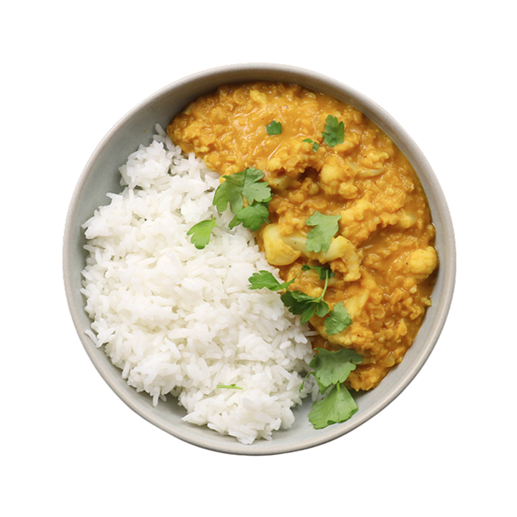

Simple Lentil Dahl
35min - 390 kcal/per person
- 50g red lentils
- onion, chopped
- cloves garlic, minced
- tsp fresh grated ginger
- tomato, diced
- 00ml coconut milk
- tsp cumin
- tsp turmeric
- tsp chili flakes (optional)
- Salt & pepper to taste
- Rinse red lentils under cold water until water runs clear. Set aside.
- Heat oil in a pan and sauté chopped onion until soft and golden.
- Add garlic, ginger, cumin, turmeric, and chili flakes. Stir for 1 minute until fragrant.
- Add diced tomato and cook for 2–3 minutes until softened.
- Stir in the lentils, coconut milk, and 400ml of water. Bring to a gentle boil.
- Reduce heat and simmer uncovered for about 20–25 minutes, stirring occasionally.
- Once lentils are soft and creamy, season with salt and pepper to taste.
- Serve warm with rice, naan, or as is. Garnish with fresh cilantro if desired.
- Enjoy!